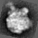
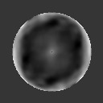

| .OPERATION: | AC MS | ; Auto Correlation - Masked and Normalized |
| .INPUT FILE: | sav_rib_avg | ; Image to be auto-correlated (input) |
| .OUTPUT FILE: | acms | ; Name of new image (output) |
| .MASK RADIUS: | 25 | ; Radius of circular mass to be centered |
| .(F)ULL OR (H)ALF OUTPUT FILE: | F | ; Full or half output file |
| INPUT | OUTPUT |
|---|---|
|  |  |
| sav_rib_avg | acms |